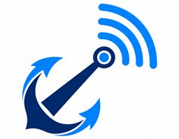

Coverage has limits
Conventional cellular networks do not reach every part of the sea where boats operate.
BEYOND THE SHORELINE
SeaLynQ. Let’s connect ↗A new way for fishing communities to stay connected at sea. SeaLynQ is exploring low-power wireless networks that carry messages beyond conventional cellular coverage.
For many fishing boats, the shore is the edge of the network. Once beyond cellular coverage, sharing a position, a short update, or a call for assistance can become difficult.
SeaLynQ is a project exploring how small, low-power messages could travel between participating boats and toward a coastal gateway.
Meet the approach ↗Conventional cellular networks do not reach every part of the sea where boats operate.
BEYOND THE SHORELINECoordinating with nearby crews and sharing useful updates can be harder offshore.
BOAT TO BOATWhen communication is limited, getting important information to others may take longer.
A PATH TO ASSISTANCESeaLynQ is an early-stage technology project. These use cases describe the challenge being explored, not a deployed emergency service.
SeaLynQ brings together a compact boat-side device, a mobile interface, and a collaborative wireless network concept—designed around simple messages that can relay from boat to boat.
Explore the technology ↗LoRa radio can send small data packets over long distances using little power. SeaLynQ explores whether participating boats can help pass those packets toward shore.
A boat creates a short message, such as a position update, using the SeaLynQ device and app.
Low-power wireless communication for small data packets over long distances.
01Participating nodes could relay messages when a direct path is unavailable.
02GPS coordinates and timestamps can help add context to shared updates.
03Security is a core design consideration as the system architecture develops.
04The concept includes a path for priority messages to be shared across nodes.
05A compact, low-power design aims to suit the practical realities at sea.
06Encryption and message handling are under development. SeaLynQ does not yet claim a validated end-to-end security implementation.
Explore a simulated relay from boat to boat, then toward shore.
Start the simulation to see a small message travel across participating nodes.
This is an illustrative simulation. SeaLynQ is not currently a live or safety-critical network.
A compact unit is envisioned to bring together the core parts of the SeaLynQ system. The prototype is in development; the illustration here is a concept, not a photograph of finished hardware.
Discuss the prototype ↗The SeaLynQ app concept brings message sharing, location context, and device status into one simple interface. These screens are illustrative and describe planned product ideas.
Connectivity should answer to the people who depend on it. SeaLynQ’s long-term direction is to work alongside fishing communities, researchers, and coastal organizations to learn what is useful, accessible, and safe.
Shape the conversation ↗Understand how crews communicate today and what they need offshore.
Test carefully with clear limits, honest claims, and community feedback.
Explore partnerships with research, coastal safety, and technology groups.
SeaLynQ brings together a mix of technical disciplines and community perspectives. We’re building the project with room for collaborators to help shape what comes next.
Direction, partnerships, and keeping the work connected to real needs.
FOUNDER / TEAM LEADExploring the boat-side device, radio integration, and power system.
HARDWARE DEVELOPMENTDesigning the app, packet flow, and network behavior.
SOFTWARE · RESEARCHLearning with advisors, institutions, and coastal communities.
MENTORS · PARTNERSTeam names and portraits can be added as contributors confirm how they would like to be represented.
Interested in the project, the technology, or a community partnership? Tell us what matters to you.